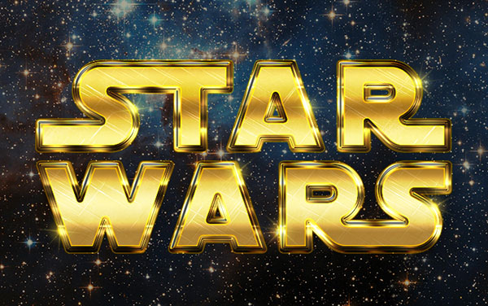
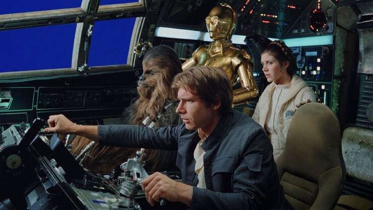

«Звёздные во́йны» (англ. Star
Wars ) — медиафраншиза в жанре эпическая космическая опера, включающая в себя 12
художественных фильмов
(9 эпизодов основной саги, также известна как «Сага Скайуокеров», 2 фильма
«историй»
и 1 анимационный), а также игровые и анимационные сериалы,
игровые телефильмы, документальные фильмы,
книги,
комиксы, видеоигры, аттракционы, игрушки и прочие произведения, созданные в рамках единой
фантастической
вселенной «Звёздных войн», задуманной и реализованной американским режиссёром Джорджем Лукасом в конце
1970-х годов, позднее расширенной.
«Звёздные войны: Империя наносит ответный удар » (1980г) - самый лучший фильм франшизы и, возможно, лучший сиквел в истории кино.
Иерархия выхода проэктов:
- «Звёздные войны: Новая надежда» (1977);
- «Звёздные войны: Империя наносит ответный удар» (1980);
- «Звёздные войны: Возвращение джедая» (1983);
- «Звёздные войны: Скрытая угроза» (1999);
- «Звёздные войны: Атака клонов» (2002);
- «Звёздные войны: Месть ситхов» (2005);
- «Звёздные войны: Пробуждение силы» (2015);
- «Изгой-один: Звёздные войны. Истории» (2016);
- «Звёздные войны: Последние джедаи» (2017);
- «Хан Соло. Звёздные войны. Истории» (2018);
- «Звёздные войны: Скайуокер. Восход» (2019);
Проэкты будущего
Официально подробности сюжета не разглашаются. По словам режиссера проекта Райана Джонсона, новый фильм
откроет собой очередную трилогию.
Она будет отличаться от фильмов, сфокусированных на Скайуокере,
которые
зрители видели ранее. В центре внимания теперь будут новые персонажи и
, возможно, другая эпоха. В
фанатскй
среде ходят слухи, что события будут разворачиваться на планете Экзегол, первое упоминание о которой
появляется
в IX эпизоде киносаги. Эта планета является скрытым от посторонних глаз миром ситхов, где
они
построили свой огромный флот.
Безымянный проект из вселенной «Звездные войны» должен стать двенадцатым полнометражным фильмом киноэпопеи.
Долгое время о будущей картине
не было достоверной информации. Известно, что режиссерское кресло займет
Райан Джонсон («Звездные войны: Последние джедаи», «Ножи наголо»).
Кроме данного фильма анонсированы
даты
выхода еще двух «Звездных войн» – 20 декабря 2024 и 18 декабря 2026.
Легендарный фильм коллекции:
«Звёздные войны. Эпизод V: Империя наносит ответный удар»
Вышедший в 1980 г. режиссёра Ирвина Кершнера, снятая по сценарию Джорджа Лукаса, Ли Брэкетт и
Лоуренса
Кэздана. Является вторым фильмом из серии фильмов
«Звёздные войны», второй частью из оригинальной
трилогии
«Звёздных войн», второй частью из «Саги Скайуокеров» по выпуску и пятой в хронологическом порядке.
В
течение первоначального проката фильма и нескольких его переизданий кассовые сборы превысили 538 млн
долларов по всему миру, что делает его самым кассовым
фильмом 1980 года. С учётом инфляции фильм стал
12-м
самым кассовым фильмом в США и Канаде с 2010 года. Также фильм занимает 15-е место в списке
«250 лучших
фильмов по версии IMDb».
Награды и номинации
- 1978 — Звёздные войны. Эпизод IV: Новая надежда (6 побед + 1 за особые достижения; 4 номинации)
- 1981 — Звёздные войны. Эпизод V: Империя наносит ответный удар (1 победа + 1 за особые достижения; 2 номинации)
- 1984 — Звёздные войны. Эпизод VI: Возвращение джедая (1 за особые достижения; 4 номинации)
- 2000 — Звёздные войны. Эпизод I: Скрытая угроза (3 номинации)
- 2003 — Звёздные войны. Эпизод II: Атака клонов (1 номинация)
- 2006 — Звёздные войны. Эпизод III: Месть ситхов (1 номинация)
- 2016 — Звёздные войны: Пробуждение силы (5 номинаций)
- 2017 — Изгой-один. Звёздные войны: Истории (2 номинации)
- 2018 — Звёздные войны: Последние джедаи (4 номинации)
- 2019 — Хан Соло. Звёздные войны: Истории (1 номинация)
- 2020 — Звёздные войны: Скайуокер. Восход (3 номинации)